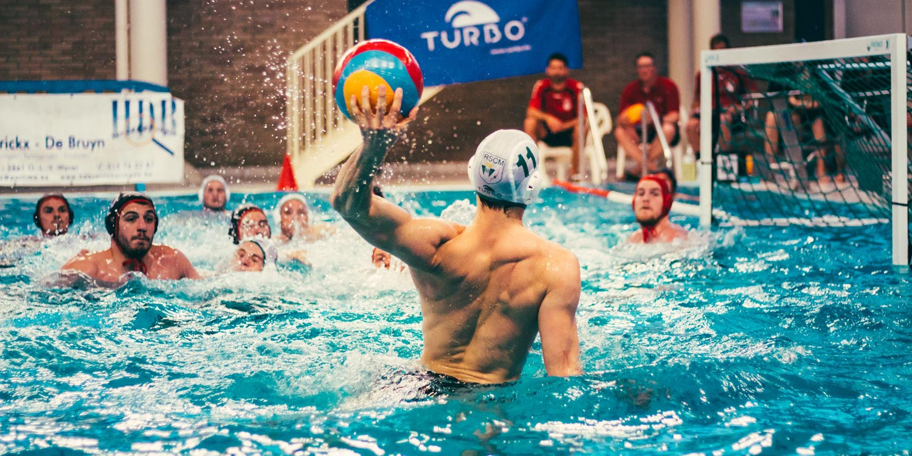

Водное поло - это динамичный командный вид спорта, который сочетает в себе элементы плавания, борьбы и командной стратегии. Игра проходит в бассейне, где две команды пытаются забросить мяч в ворота соперника.
Этот вид спорта требует не только физической выносливости, но и тактического мышления, быстрой реакции и умения работать в команде. Игроки постоянно находятся в движении, удерживаясь на воде без опоры на дно.

На изображении показан момент атаки - один из самых напряжённых элементов игры.
Водное поло считается одним из самых тяжёлых олимпийских видов спорта из-за высокой нагрузки на все группы мышц.